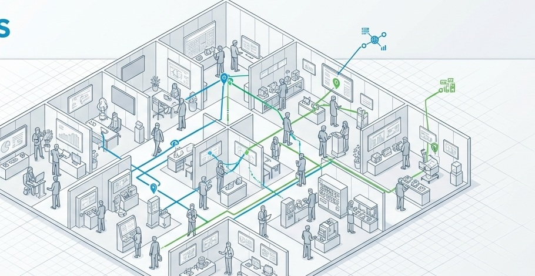
Visitor Location
Understand where visitors or selected guests are in the venue and use that information for VIP support and real-time operational decisions.
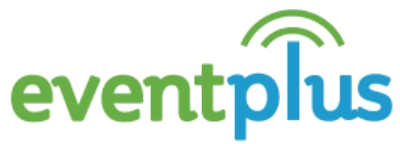
REAL EVENT × LOCATION INTELLIGENCE
Who went where, how long they stayed, and what captured their interest. EventPlus connects registration data with in-venue behavior data and turns it into insights that support event operations, sales follow-up, and marketing.
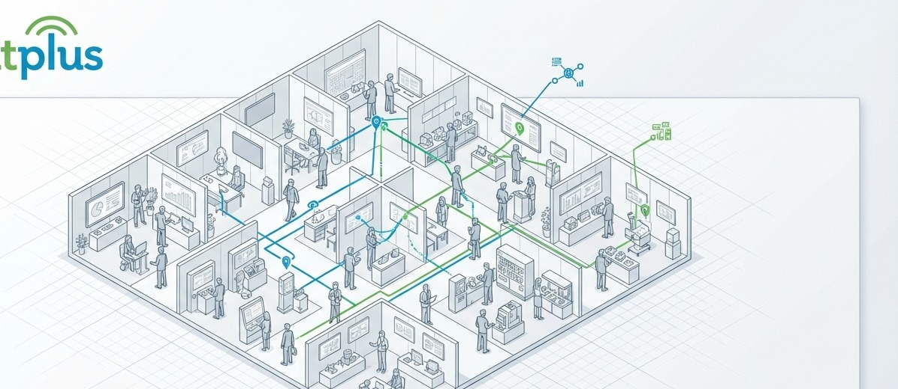
WHAT EVENTPLUS DOES
Go beyond location tracking. EventPlus can support live operations, sales engagement, exhibitor services, and post-event review — configured around your event objectives.

Understand where visitors or selected guests are in the venue and use that information for VIP support and real-time operational decisions.
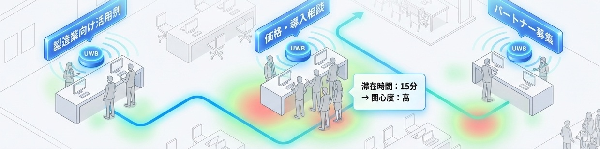
Record and analyze which booths or areas were visited and how long attendees stayed.
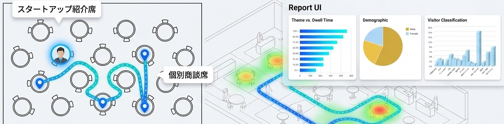
Visualize traffic patterns, popular areas and congestion by time of day across the venue.
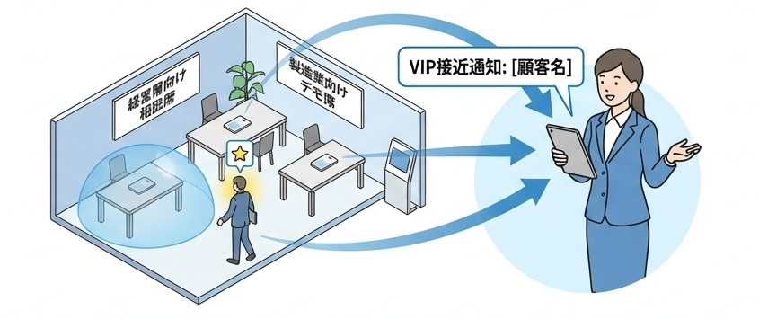
Detect the arrival or approach of important guests and help sales or hospitality teams respond quickly.
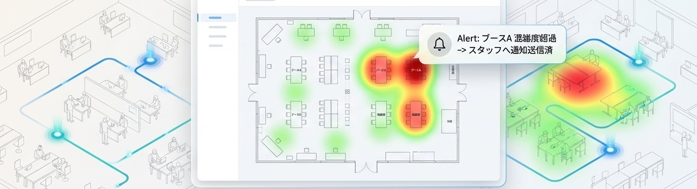
Use congestion and dwell data to improve staffing, guidance and consultation-area operations.
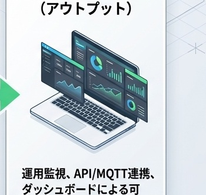
Combine visit, dwell-time and profile data to inform follow-up activity and improve future events.
RECEPTION & ID LINKING
When attendee-level behavioral data is required, the attendee QR code is linked to a Beacon Card or other device ID at reception. The workflow is designed to remain quick and practical for on-site operations.
Scan the pre-registered attendee QR code at the reception terminal.
Scan the ID of the Beacon Card or other device being issued.
Register the attendee information and device ID in EventPlus.
Issue the card and admit the attendee. In-venue behavioral data collection begins.
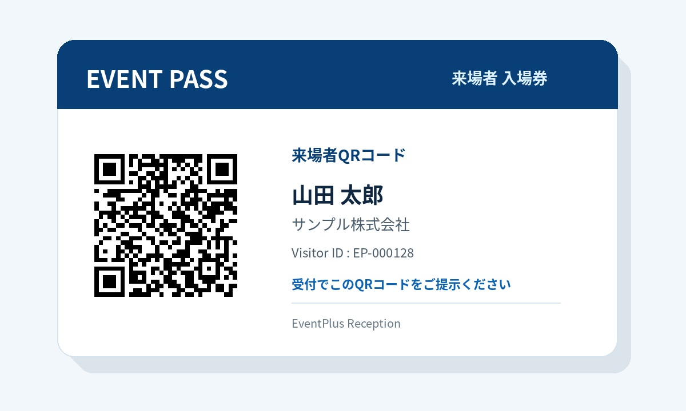
You can import an existing attendee list and use EventPlus only for location-ID linking, or use EventPlus for the full flow from pre-registration and QR reception through entry/exit management.
We design the number of lanes, pre-configuration and distribution process around expected volume and peak arrival times to reduce congestion at reception.
ARCHITECTURE
The two main approaches are attendee-issued Beacon Cards and smartphone-based detection, with UWB added where higher precision is required.
For events that require reliable attendee-level behavioral data.
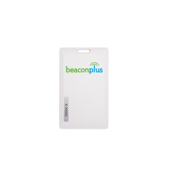
AttendeeCarries a Beacon Card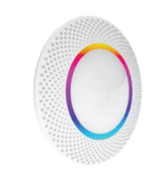
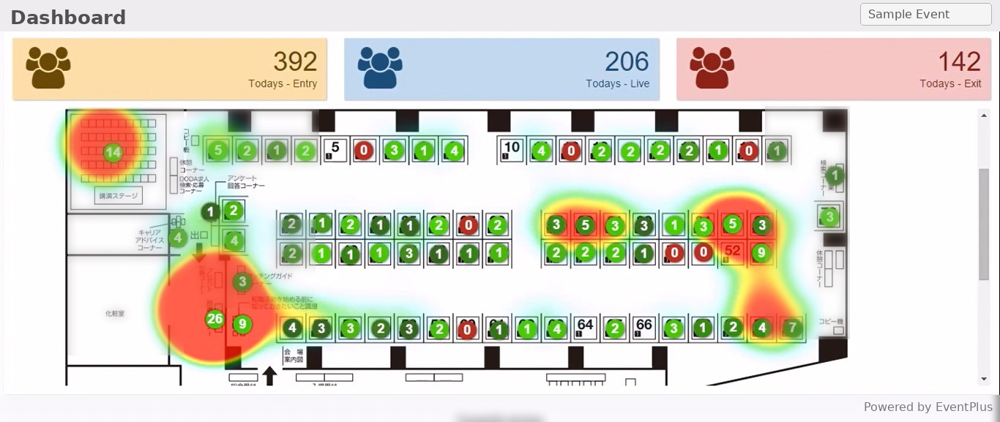
EventPlusReal-time Web visualization and analyticsFor very large events where issuing cards to every attendee is not practical.
Used either as an attendee-issued card or a booth-installed beacon.
Sensor used to detect beacons in booths and designated areas.
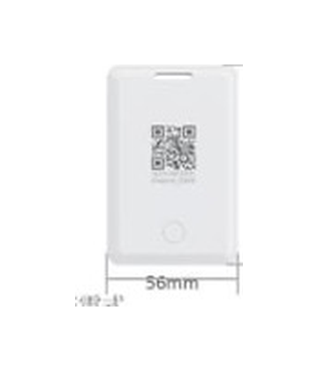
For use cases requiring higher-precision location and dwell-time detection.
REAL-TIME USE
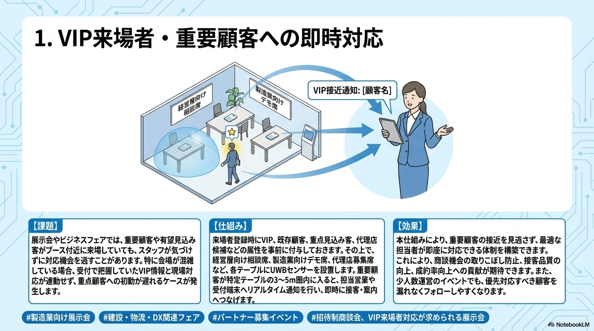
Detect when key guests arrive or approach a designated area and share that information with sales or reception teams to enable faster response.
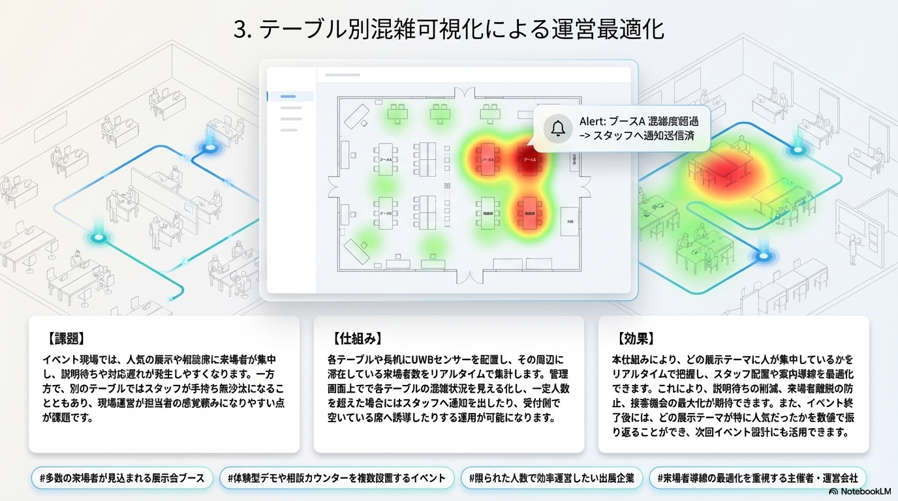
Monitor dwell and congestion by booth or consultation area and adjust staffing or guidance based on live data.
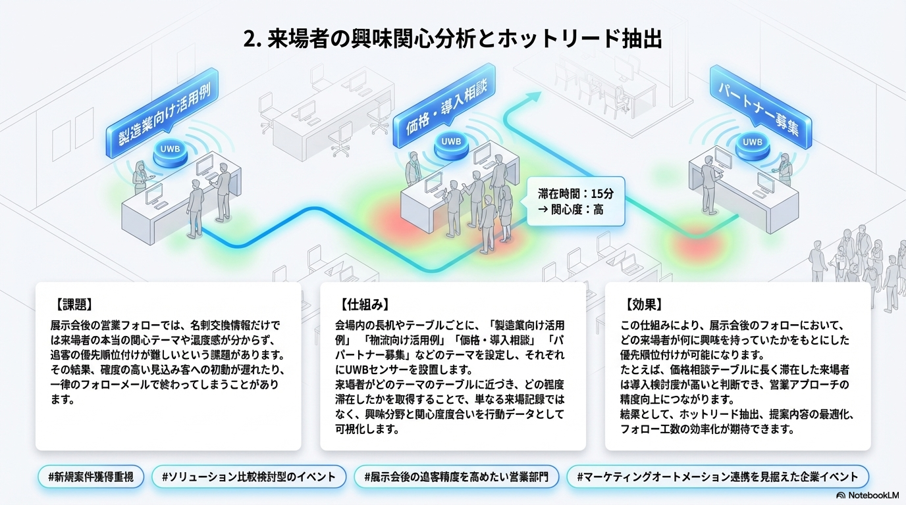
Analyze how long visitors engage with specific themes and use that information for post-event sales follow-up and exhibitor support.
DOWNLOAD
See the complete EventPlus workflow — reception, location-data capture, real-time operations, analytics and optional modules.
ANALYSIS & REPORT
Review heatmaps, booth dwell time, attendee profiles, inflow/outflow and time-based trends to support post-event evaluation and future planning.
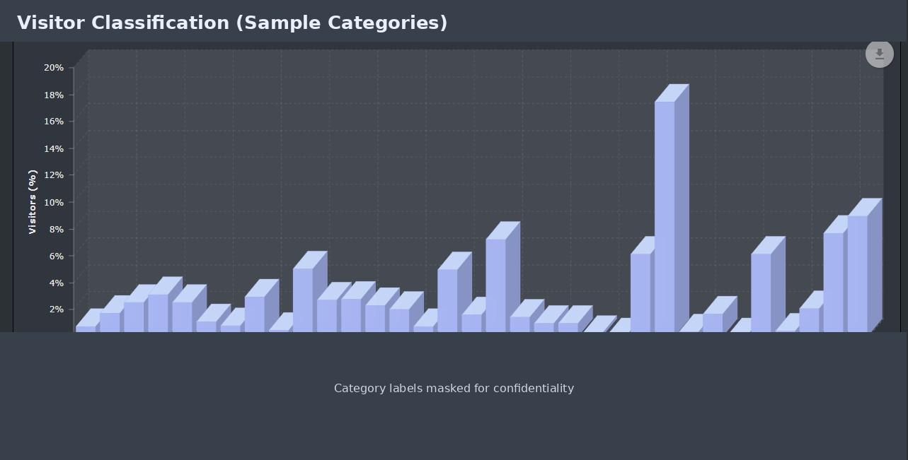
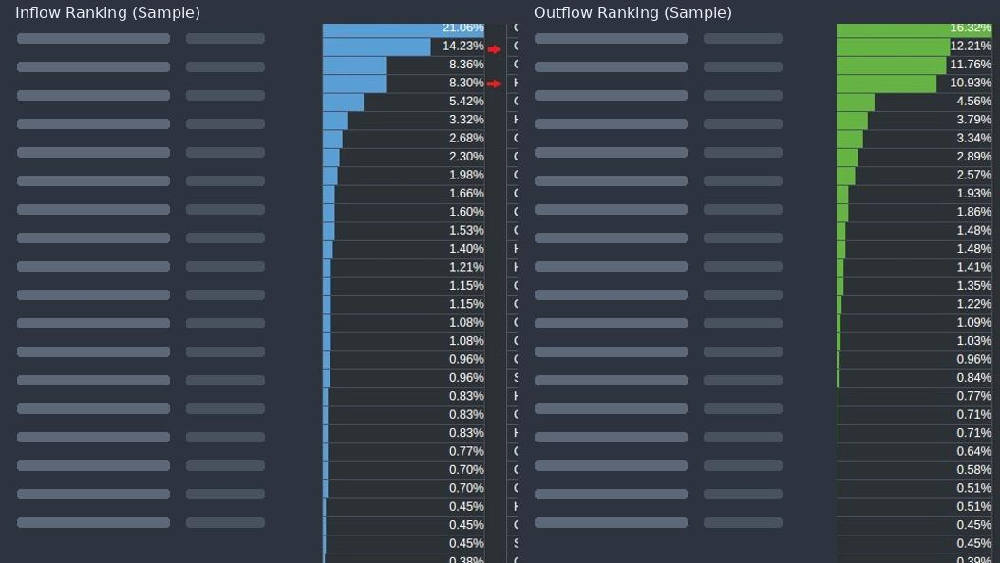
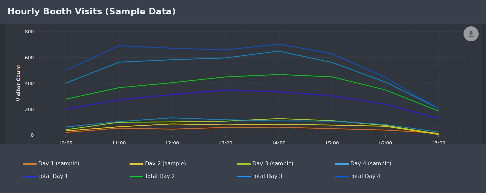
EventPlus supports analysis and report preparation while allowing teams to review the underlying data in dashboards or CSV. We place emphasis on confirming aggregation values and conditions before finalizing deliverables, while minimizing manual aggregation steps wherever possible.
FOR EVENT PARTNERS
EventPlus can be added to your existing event plan or reception platform rather than replacing it. We can support joint proposals with technical explanation, architecture design, on-site setup, operations and analytics for each project.
Share event scale, goals and challenges
Design architecture, data capture and operations
Validate reception, sensors and network
Setup, support and real-time use
Support post-event review
You can keep your existing registration and reception platform while combining its attendee IDs with EventPlus location and behavioral data. CSV or API-based integration can be reviewed based on project requirements.
EVENT INTELLIGENCE — EVENTPLUS × AI
We are exploring an Event Intelligence concept that combines verified EventPlus data with AI to help users discover analytical perspectives and assist with report preparation.
* This is not part of the current standard offering. Scope and availability have not been finalized.
Illustrative answer: Identify matching attendees, counts and visit histories to review potential sales follow-up targets.
Illustrative answer: Compare dwell time, visits and traffic patterns across events and highlight themes that changed.
Illustrative answer: Review peak congestion, dwell hotspots and attendee movement patterns to suggest areas for improvement.
CASE EXAMPLE
EventPlus has been used in real-world venues for location and behavioral data analysis, including publicly shareable large-scale examples.
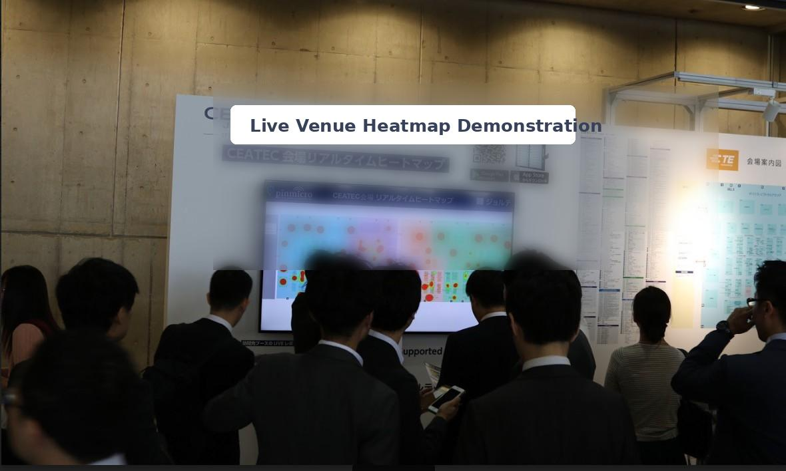
Combined an official event app with location data to provide venue heatmaps, booth search and navigation, and visit-behavior visualization.
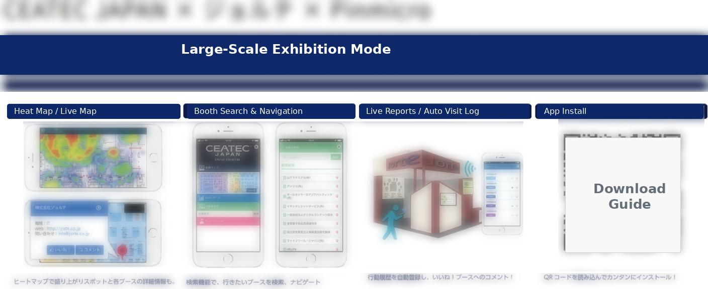
FAQ
Common questions we receive during evaluation, organized by category.
It depends on the data you want to capture and the size of the event. If attendee-level behavior is required across the full audience, issuing a card to everyone is the standard approach. It is also possible to track only VIPs or selected attendees. For very large events, we may recommend the smartphone approach instead.
Collection can be designed around the venue flow using staffed exit points, dedicated return boxes or other methods. Multiple collection points can be used when there are several exits.
There is always some risk of loss. We reduce it through lanyard use, clear return instructions at exits, well-designed collection flow and spare inventory.
BLE is primarily used for zone-level detection — for example, identifying which booth or area an attendee stayed in. Accuracy varies with venue conditions, obstructions and sensor placement. UWB can be proposed when higher precision is required.
UWB is suited to detailed VIP/key-account location, dwell analysis at consultation tables, high-precision demos and detailed traffic analysis within limited areas.
We review venue Wi‑Fi, internet connectivity and power conditions in advance and design the network together with sensor and Gateway placement. Depending on the venue, wired LAN or mobile connectivity may also be considered.
For large events, it is important not to rely entirely on the same Wi‑Fi used by general attendees. We design and test options such as dedicated SSIDs, dedicated circuits, wired connectivity and mobile networks, and can propose redundancy based on venue conditions.
The workflow is designed to be simple: scan the attendee QR and device QR in sequence. We reduce queue risk by designing the right number of reception lanes, separating card-distribution steps where useful, and pre-configuring devices based on expected volume and peak times.
Yes. EventPlus can provide pre-registration, QR reception, entry/exit management and attendee-to-Beacon-ID linking as a complete workflow.
Yes. We can support analysis and report preparation based on captured data such as heatmaps, booth visits, dwell time, attendee profiles and time-based trends. We emphasize a workflow in which aggregated values are checked against source data before deliverables are finalized.
As a future concept, we are considering AI-assisted analysis that lets users query accumulated event data in natural language, identify attendees or patterns that match certain conditions, compare events and assist with report drafting. This is not part of the current standard offering.
We propose an architecture based on your event size, required data, reception workflow and venue conditions.